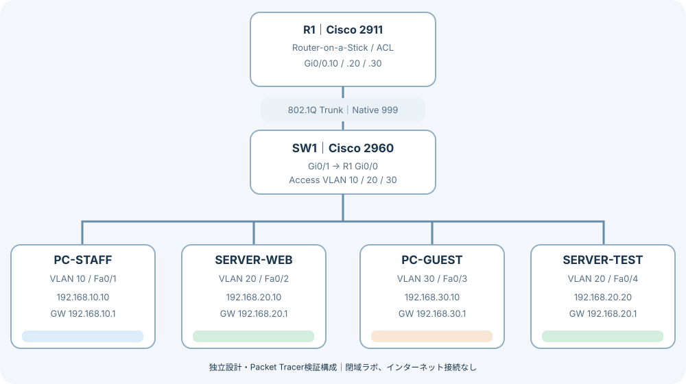
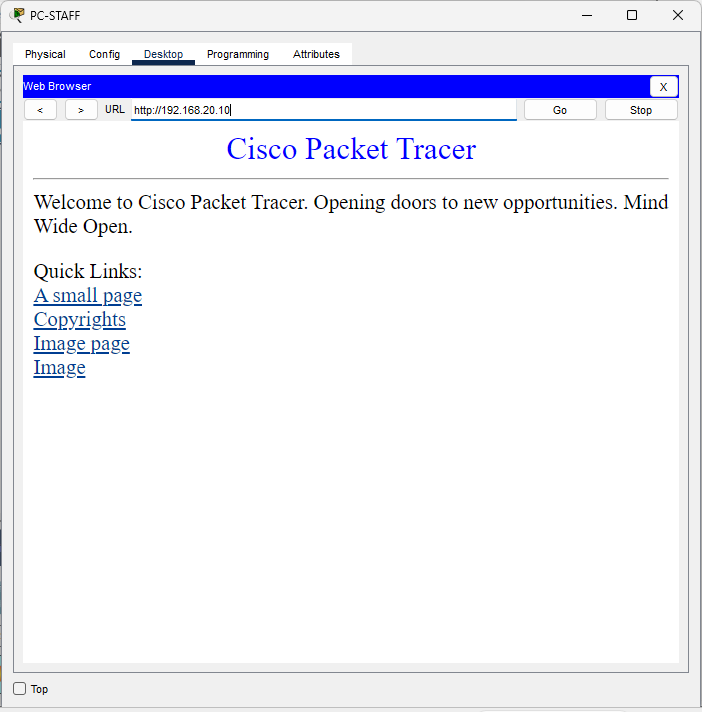
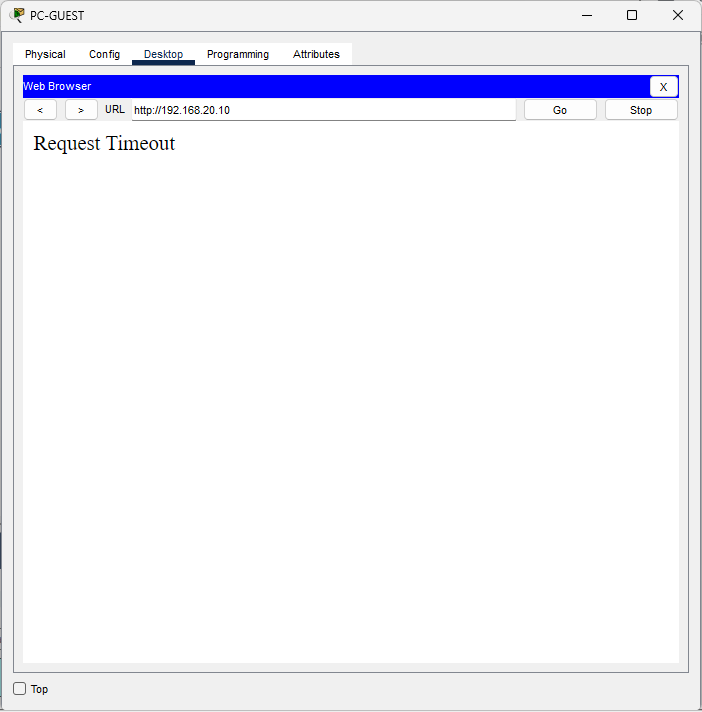
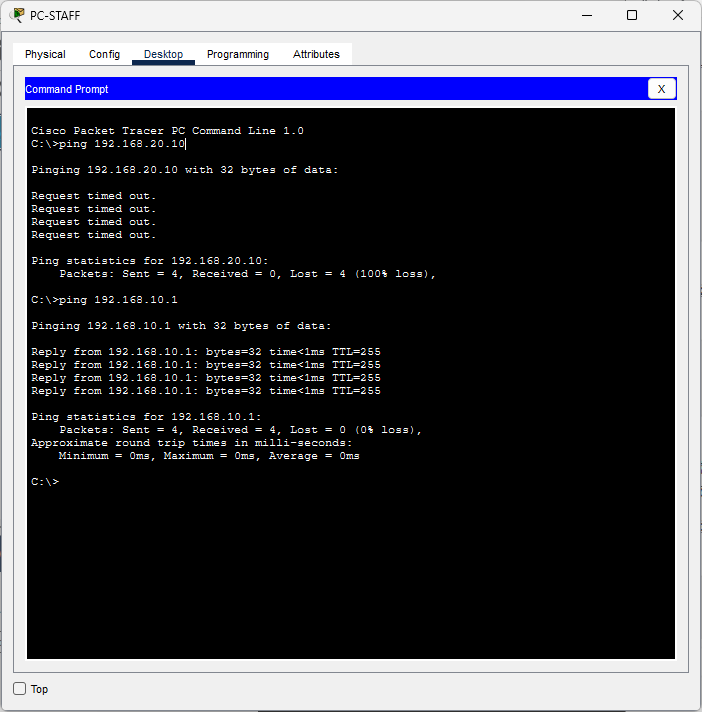
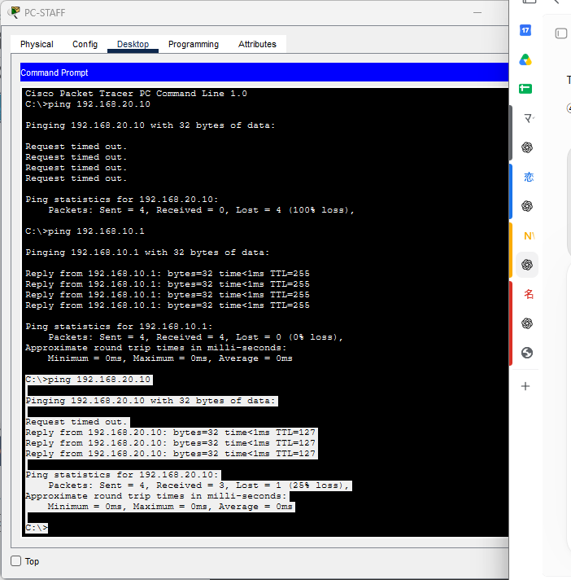
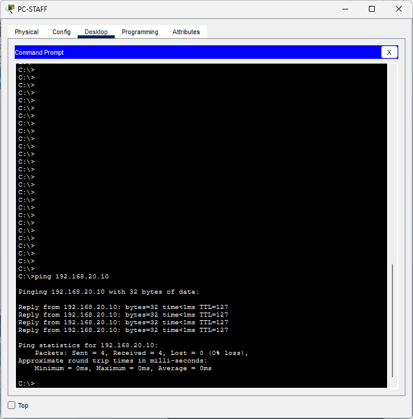
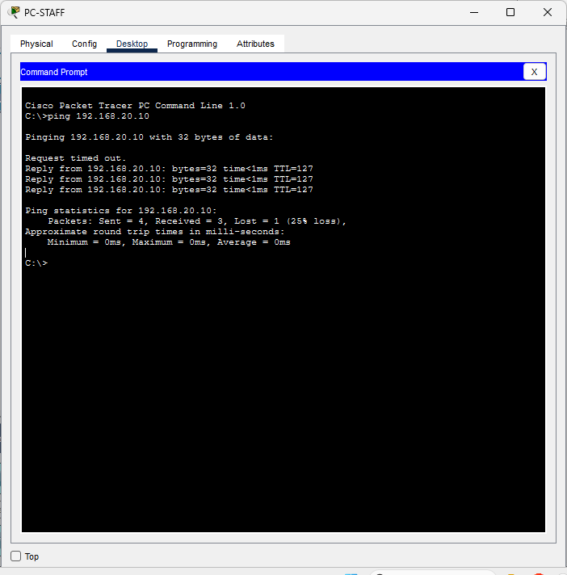
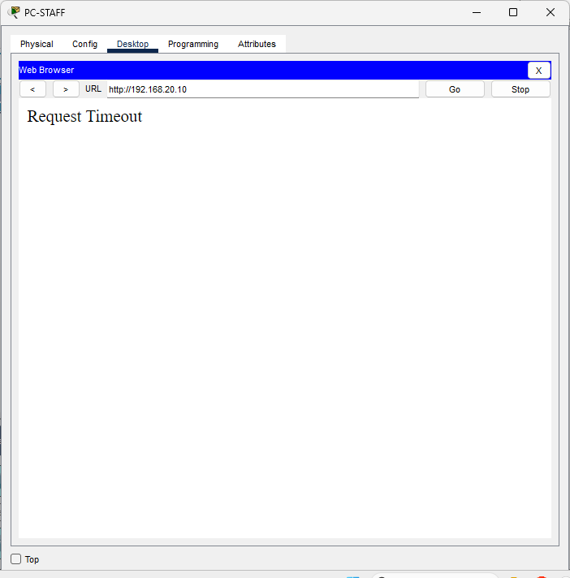
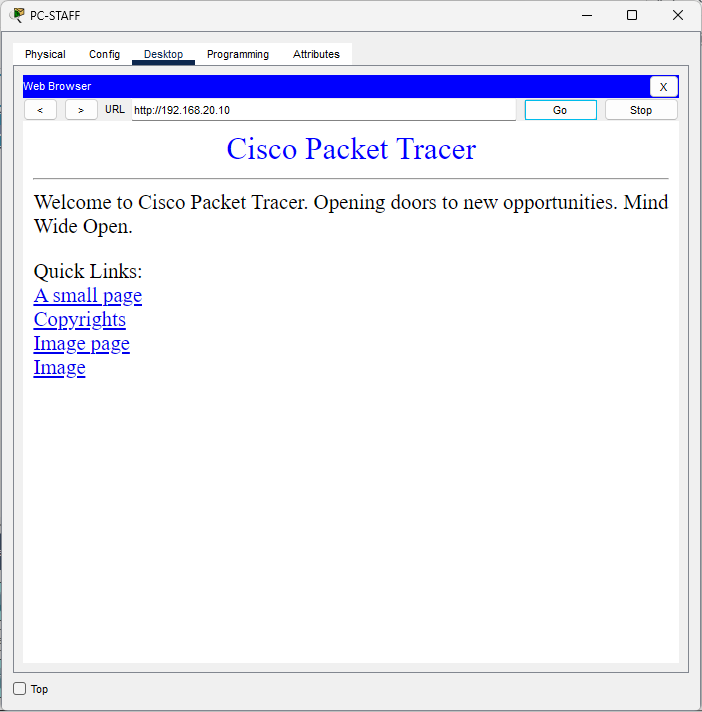
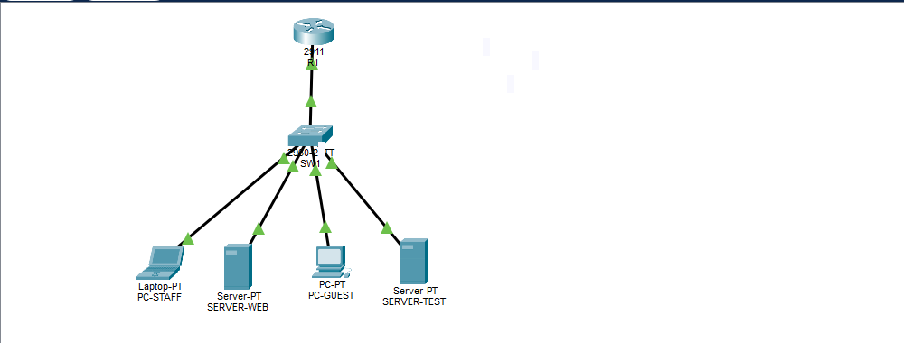

Network Infrastructure Lab
小規模オフィスのネットワークを題材に、要件定義から設計、機器設定、検証、障害切り分けまでを段階的にまとめる自主制作プロジェクトです。
現在の状態：Packet Tracerで基本通信と障害演習を実測済み
架空の小規模オフィスを独立設計し、作者がCisco Packet Tracerで構築・検証しました。必須通信試験9件で期待結果を確認し、設定ミス3種類の発生・切り分け・復旧も確認しました。実機試験・第三者による独立再現は未実施です。
検証サマリー
※ 作者の実測要約と公開画像に基づく記録です。全試験の生ログは掲載していません。実機検証と別環境での再現試験は実施していません。
01 / 想定要件
主なテーマはVLANによる分離、VLAN間ルーティング、ACLによるアクセス制御、到達性・経路の確認です。外部インターネット接続は検証範囲外です。
この構成を選ぶ意味と制約
- 役割別VLANで通信範囲を分け、R1でVLANをまたぐ通信を制御します。
- Router-on-a-StickはL2スイッチとルーターで経路とACLを観察できる構成です。単一トランクに依存し、冗長化はありません。
- 同じVLAN20にWEBとTESTを置くことで、VLANへの到達と特定ホストへの許可を分けて検証します。同一VLAN内のサーバー同士はルーターACLで隔離されません。
ACLで保証できること・できないこと
社員・ゲスト・サーバー各VLANのサブインターフェースにin方向で適用します。社員側でWEB宛TCP/80とICMP echoを許可し、サーバー側ではACK/RST付きTCPとecho-replyを許可します。
参照CLIのサーバー側TCPルールには送信元ポート80の限定がありません。establishedはフラグ条件であり、接続状態を追跡するファイアウォールではありません。HTTP応答だけの許可や偽装防御を保証しません。HTTPは暗号化されず、本番用の管理・冗長化設計も対象外です。
02 / 検証構成図

構成図を拡大して読む →R1 Gi0/0 ↔ SW1 Gi0/1を802.1Q Trunk接続。ルーターのサブインターフェースでVLAN間ルーティングとACLを実装しています。VLAN 999はSW1側の未使用Native VLANです。R1にnative 999用サブインターフェースはなく、VLAN999のL3疎通は提供しません。
03 / 構築・検証プロセス
- 要件と通信許可・拒否条件を定義する
- アドレス設計とVLAN構成を確定する
- スイッチのVLAN・アクセスポート・トランクを設定する
- ルーターのサブインターフェースでVLAN間通信を設定する
- ACLでゲストからサーバーへの通信を制限する
showコマンドとPing・HTTPで結果を検証する- 設定ミスを想定した障害切り分けと修正を記録する
04 / 基本通信テスト
| ID | 項目 | 期待 | 実測要約 | 専用画像 |
|---|---|---|---|---|
| T01 | 社員 → WEB HTTP | 許可 | ページ表示 | T01画像 |
| T02 | 社員 → WEB Ping | 許可 | 4/4応答 | 未掲載 |
| T03 | 社員 → TEST HTTP | 拒否 | Timeout | T03画像 |
| T04 | 社員 → TEST Ping | 拒否 | 到達不可 | 未掲載 |
| T05 | ゲスト → WEB HTTP | 拒否 | Timeout | T05画像 |
| T06 | ゲスト → 社員 Ping | 拒否 | 到達不可 | 未掲載 |
| T07 | ゲスト → 自GW Ping | 許可 | 応答成功 | 未掲載 |
| T08 | 社員 → 自GW Ping | 許可 | 応答成功 | 未掲載 |
| T10 | ゲスト → 社員GW Ping | 拒否 | 到達不可 | 未掲載 |


必須試験T01〜T08・T10の9件は作者の記録で期待結果と一致。追加T09（サーバー発の新規TCP接続）は未実施です。Timeout単体ではACL原因を断定できません。設定出力・カウンタ差分など、公開されていない証拠は証跡対応表に整理しています。
05 / 障害切り分けの実測
| 演習 | 障害時 | 復旧確認 |
|---|---|---|
| TrunkからVLAN20を除外 | 社員→WEB Ping 0/4 | VLAN20再追加後 4/4 |
| 社員PCのGW誤設定 | 異VLAN WEB Ping 0/4 | GW修正後 4/4 |
| HTTP許可ACLを削除 | Ping 3/4応答・HTTP Timeout | ACL復旧後HTTP表示 |
障害を意図的に発生させ、showコマンドや端末設定をもとに原因を絞り込み、修正後の再試験まで要約しています。障害②は要約のみで、専用画像は未掲載です。障害③の初回Ping損失の原因は未特定です。
06 / 設計資料・検証記録
構築ファイルと検証画面10枚を公開しています。Cisco Packet Tracer 9.0.1で作成したファイルです。実測は作者がPacket Tracerで実施したものです。第三者による別環境での再試験と、参照CLI・保存済み設定の完全一致確認は未実施です。
構築ファイルのダウンロード
VLAN・VLAN間ルーティング・ACLを設定した最終構築ファイルです。Cisco Packet Tracerで開いて確認できます。
検証スクリーンショット
基本通信と障害切り分けの記録です。画像を選ぶと原寸で表示します。全試験の要約は上記の実測記録をご覧ください。HTTPのTimeout画像は失敗の観測であり、ACL原因の単独証明ではありません。
















07 / 担当範囲と学習成果
自主制作として、架空オフィスの要件・設計を整理し、作者がPacket Tracer上で構築、基本通信試験、3種類の設定ミスの発生・切り分け・復旧を実施しました。技術資料・画像・構築ファイルを公開し、観測できた結果と未検証の範囲を分けて示しています。
目的を読み解き、構成として整理し、設定だけでなく確認方法まで設計する姿勢を重視しています。ネットワークの知識を、再現可能な技術資料として示すことを目指します。
本ページは勤務先の社内資料・図・設定・演習ファイルを転載せず、学習用に独立して作成したものです。